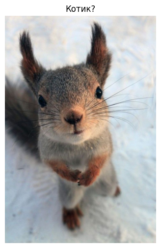
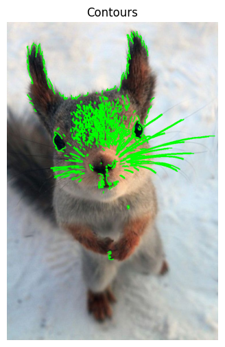
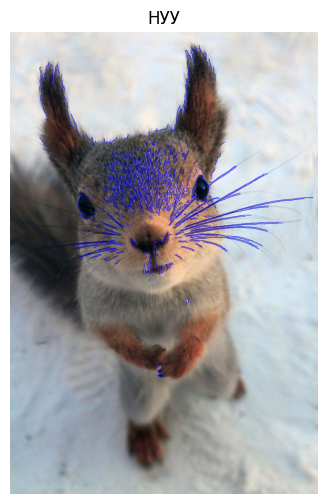
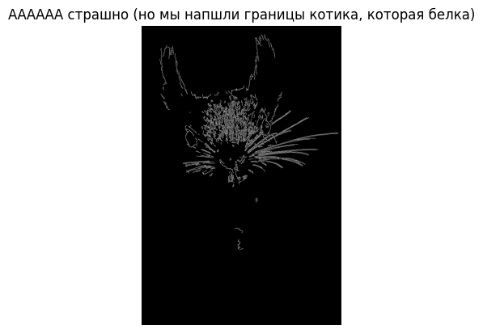
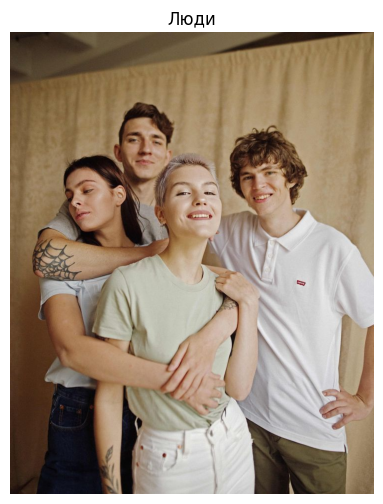
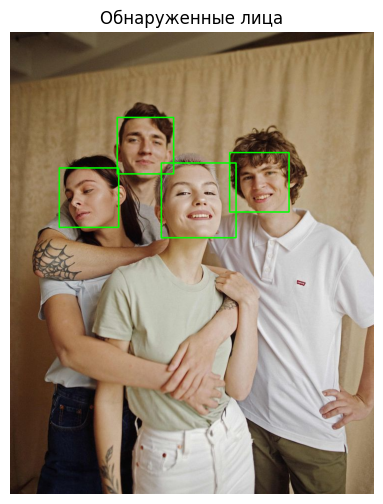

Контуры
Описание и синтаксис
Функция cv2.findContours используется для нахождения контуров в бинарных изображениях. Она возвращает список точек, описывающих контуры, и иерархию вложенности.
Синтаксис:
contours, hierarchy = cv2.findContours(image, mode, method)image: бинарное изображение.mode: режим извлечения контуров (cv2.RETR_TREE,cv2.RETR_EXTERNALи др.).method: метод аппроксимации контуров (cv2.CHAIN_APPROX_SIMPLE,cv2.CHAIN_APPROX_NONE).
Загрузка изображения
# Загрузка изображения
image = cv2.imread('example3.jpg')
# Вывод изображения
show_image(image, "Котик?")Исходное изображение:
Нахождение контуров
# Преобразование в оттенки серого
gray = cv2.cvtColor(image, cv2.COLOR_BGR2GRAY)
# Нахождение границ
edges = cv2.Canny(gray, 100, 200)
# Поиск контуров
contours, _ = cv2.findContours(edges, cv2.RETR_TREE, cv2.CHAIN_APPROX_SIMPLE)
# Рисование контуров
contour_image = image.copy()
cv2.drawContours(contour_image, contours, -1, (0, 255, 0), 2)
# Вывод изображения
show_image(contour_image, "Contours")Результат:
Рисование контуров
# Заполнение контуров
filled_contour_image = image.copy()
cv2.drawContours(filled_contour_image, contours, -1, (255, 0, 0), -1)
# Вывод изображения
show_image(filled_contour_image, "НУУ")Результат:
Детектирование краев (Canny Edge)
# Детектирование краев
edges = cv2.Canny(image, 100, 200)
# Вывод изображения
plt.imshow(edges, cmap='gray')
plt.title("АААААА страшно (но мы нашли границы котика, которая белка)")
plt.axis('off')
plt.show()Результат:
Обнаружение и распознавание объектов
Описание и синтаксис
Функция cv2.CascadeClassifier используется для обнаружения объектов (например, лиц) с помощью заранее обученных моделей.
Синтаксис:
face_cascade = cv2.CascadeClassifier(path_to_cascade)
faces = face_cascade.detectMultiScale(image, scaleFactor, minNeighbors)path_to_cascade: путь к файлу каскада.image: изображение в оттенках серого.scaleFactor: шаг уменьшения размера изображения.minNeighbors: минимальное число соседей для подтверждения обнаружения.
Код
# Загрузка изображения
image = cv2.imread('example6.jpg')
# Вывод изображения
show_image(image, "Люди")
# Преобразование в оттенки серого
gray = cv2.cvtColor(image, cv2.COLOR_BGR2GRAY)
# Загрузка каскада для обнаружения лиц
face_cascade = cv2.CascadeClassifier(cv2.data.haarcascades + 'haarcascade_frontalface_default.xml')
# Поиск лиц
faces = face_cascade.detectMultiScale(gray, 1.1, 4)
# Рисование рамок
for (x, y, w, h) in faces:
cv2.rectangle(image, (x, y), (x + w, y + h), (0, 255, 0), 2)
# Вывод изображения
show_image(image, "Обнаруженные лица")Исходное изображение:
Результат:
